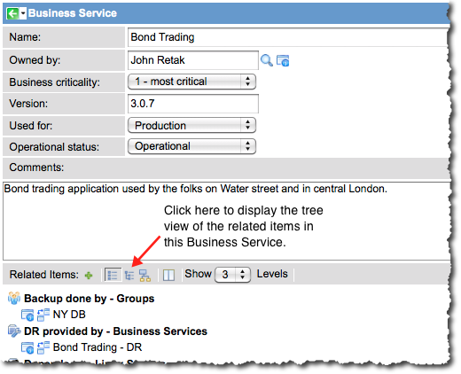

BSM Map Indicators - Versions Prior to Eureka
1 Overview
Map Indicators enable administrators to define records from specific tables as trouble sources for CIs in Business Service Management (BSM) Maps. The administrator then configures Map Actions to display trouble records for CI nodes using these indicators. The base system defines records from the following tables as trouble:
- incident
- problem
- change_request (past, current, planned)
- cmdb_ci_outage (past, current, planned)
- task_ci
| |
Note: If you are using the Eureka or later version of the ServiceNow platform, see current information in Business Service Management Map. |
2 Map Indicator Record
Only records from the tables listed in the previous section are configured as indicators in the base system. To create Map Actions for records for any other table, create a custom Map Indicator record for that table. For an example of how a custom Map Indicator is used to define trouble for a Map Action, see How it Works Together. The Map Indicator record provides the following fields:
| Field | Description |
| Table | Select the table that is the source of the trouble for this indicator. |
| Name | Select a unique and descriptive name for this indicator. This is important if you are using the same table for more than one indicator, such as using the Outage table for planned and unplanned outages. Do not include spaces in the name. |
| Order | This value determines the order in which the indicators are evaluated. |
| Node Color | Enter the name of the color to display on a node when this type of trouble is detected. This field accepts CSS color declarations, including hexidecimal and RGB notation. |
| CMDB CI field | Select the field in this table that identifies the CI experiencing the trouble. In most cases, the only available field in the tree picker is Configuration item. |
| Start field | Select the appropriate date/time field for the starting point of the trouble for this indicator. The tree picker displays only fields of the appropriate data type from the selected table. This data is not displayed on a map, but is used in the issues pop-up in the tree view of configuration items related to a Business Service. |
| End field | Select a date/time field for the end point of the trouble for this indicator. The tree picker displays only fields of the appropriate data type from the selected table. This data is not displayed on a map, but is used in the issues pop-up in the tree view of configuration items related to a Business Service. |
| Description field | Select the appropriate field for a description of this trouble. The tree picker displays only fields of the appropriate data type from the selected table. This data is not displayed on a map, but is used in the issues pop-up in the tree view of configuration items related to a Business Service. |
| Description | Type a brief description of this indicator. |
| Conditions | Define the conditions under which records from the selected table are applied to this indicator as trouble. For example, planned outages require conditions that describe a start time in the future. |
{kind=link}
2.1 Viewing Additional Trouble Data
The following data from issues affecting a Business Service can be viewed only in the tree view of related items in the Business Service record:
- Start field
- End field
- Description field
To view this data, switch the view from the Flat view to the Tree view:
- Navigate to Configuration > Business Services and select a record to view.
- In the Business Service record, click the Tree view icon in the Related Items toobar.
- 
- The tree view of related configuration items in this Business Service appears. Items experiencing trouble are marked with warning icons (
 ).
).
- Hover the cursor over a warning icon to display the issue popup containing data configured in Map Indicators.
{kind=link}
{kind=link}